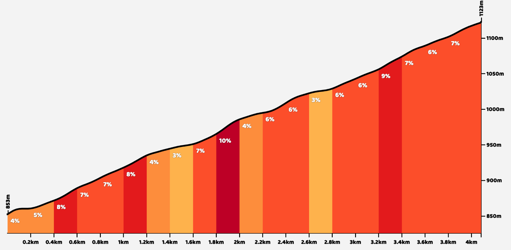
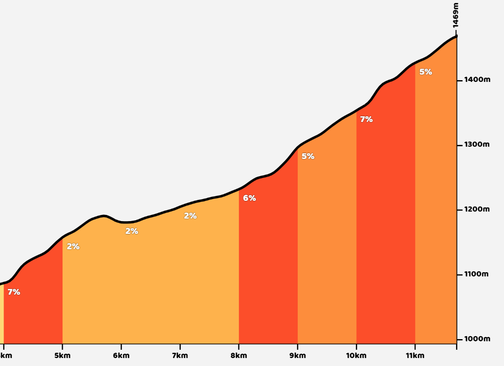
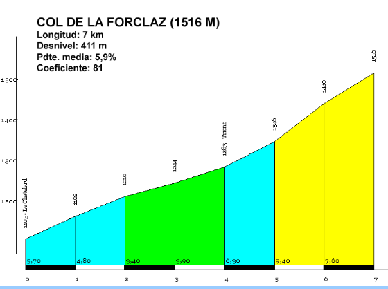
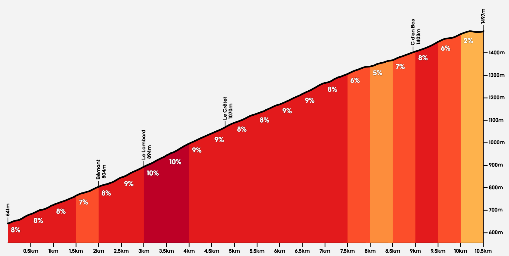
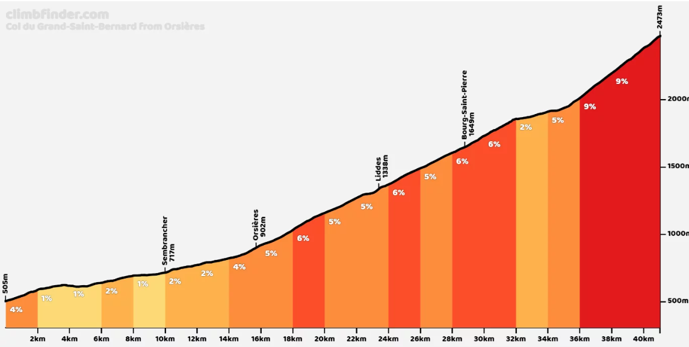
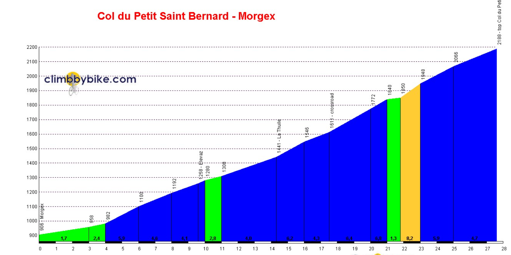
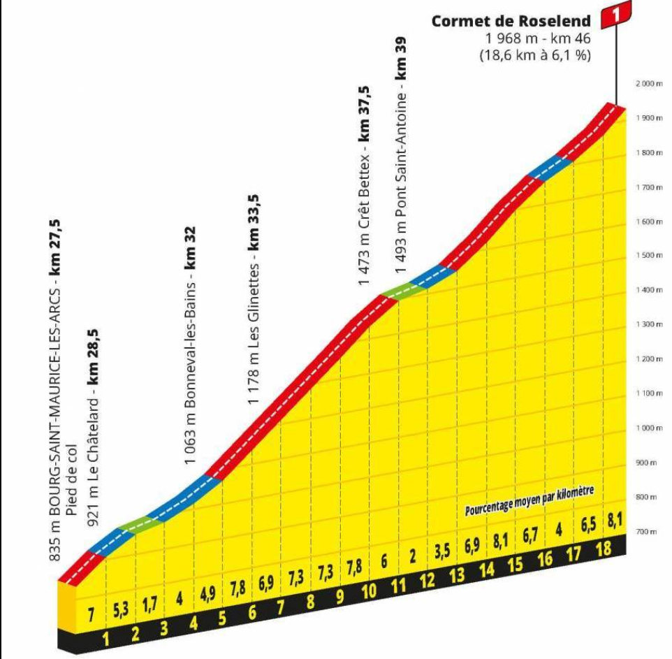
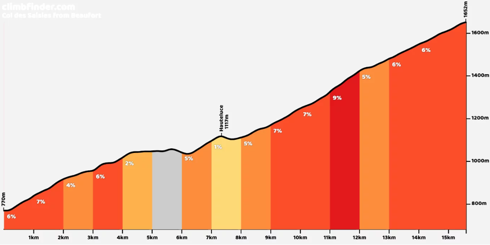

Vaudagne
17'30"
Mi tiempoMy time
3,1 w/kg
Potencia mediaAvg power

Col des Montets
25'30"
Mi tiempoMy time
3,1 w/kg
Potencia mediaAvg power

Col de la Forclaz
7 km @ 6%30'50"
Mi tiempoMy time
3,1 w/kg
Potencia mediaAvg power

Champex
10,5 km @ 8,2%57'30"
Mi tiempoMy time
3,2 w/kg
Potencia mediaAvg power

Grand Saint Bernard
40 km @ 5%1h59'
Mi tiempoMy time
2,8 w/kg
Potencia mediaAvg power

Petit Saint Bernard
21 km @ 5%1h37'
Mi tiempoMy time
2,7 w/kg
Potencia mediaAvg power

Cormet de Roselend
19 km @ 6%1h34'
Mi tiempoMy time
2,75 w/kg
Potencia mediaAvg power

Les Saisies
15 km @ 6% · MetaFinish1h24'
Mi tiempoMy time
2,5 w/kg
Potencia mediaAvg power
